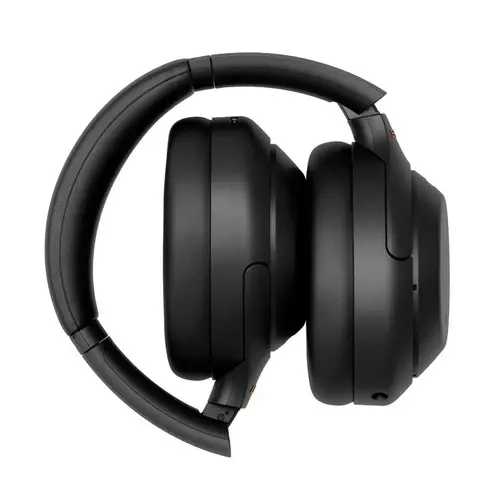

Escucha como nunca antes
Disfruta de un sonido de alta calidad con los audífonos Sony WH-1000XM4.
Características
- Cancelación de ruido líder en la industria
- Hasta 30 horas de batería
- Sonido de alta resolución
- Comodidad excepcional
Beneficios
Los Sony WH-1000XM4 ofrecen una experiencia auditiva inigualable, ideal para cualquier situación, ya sea que estés viajando, trabajando o simplemente disfrutando de tu música favorita.
Testimonios

★
★
★
★
★
"Los mejores audífonos que he tenido. La cancelación de ruido es impresionante y la calidad de sonido es sobresaliente."
- Armando Paredes

★
★
★
★
★
"Excelente calidad, muy cómodos y la duración de la batería es increíble. Los recomiendo totalmente."
- Esteban Quito
Compra Ahora
No te pierdas la oportunidad de mejorar tu experiencia auditiva. ¡Compra los Sony WH-1000XM4 hoy mismo!
Comprar Ahora (Link a amazon) 